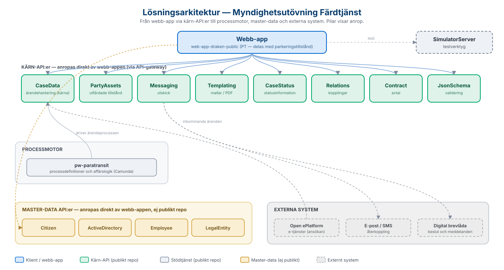

Här samlar vi länkar till de öppna källkodsrepon på GitHub som tillsammans bygger upp
helhetslösningen, samt de API:er som lösningen integrerar med.
Webb-appen
Färdtjänst bygger i stor utsträckning på lösningen för
parkeringstillstånd och delar
webb-app med den: i det gemensamma repot ("draken"), där flera webb-appar byggs från samma
kodbas, körs färdtjänstärendena som egna ärendetyper i webb-appen med konfigurationen
PT. Frontend är byggd med Next.js/React och backend i Node.js/Express.
Backend sköter inloggning via SAML mot kommunens identitetsleverantör (IdP) och all
kommunikation med de underliggande API:erna via kommunens API-gateway (WSO2), där
applikationen autentiserar sig med OAuth2 (client key/secret).
Liksom parkeringstillstånd bygger färdtjänst på CaseData - ett kärn-API
för myndighetsutövning - men har en egen processmotortjänst (Camunda) med processer
specifika för färdtjänst. Eftersom lösningen delar webb-app med parkeringstillstånd
gäller API-listan för PT i README-filen i webb-appens repo även för färdtjänst.
Översikt över hur webb-appen, kärn-API:erna, processmotorn, master-data och externa
system hänger ihop. Pilarna visar anrop. Bilden är härledd från webb-appen, API-listan
och respektive API:s beskrivning av vad det i sin tur anropar.

Lösningsarkitektur — från webb-app via kärn-API:er till processmotor, master-data och externa system.
API:er som lösningen integrerar med
Webb-appen anropar ett antal API:er via API-gatewayn. Navet är CaseData,
som lagrar ärenden, intressenter, utredningar och beslut, medan processmotorn
pw-paratransit (byggd på Camunda) driver ärendet genom processens
steg. De flesta API:er finns som öppna repon på Sundsvalls kommuns GitHub. Tabellen
nedan beskriver vad varje API gör och länkar till källkoden.
API
Typ
Beskrivning
Källkod
CaseData
Kärn-API
Navet i lösningen – lagrar och hanterar myndighetsärenden med intressenter, bilagor, utredningar, beslut, anteckningar och full ärendehistorik.
Integrerar mot processmotorn Camunda och driver färdtjänstprocesserna – innehåller processdefinitioner och affärslogik som uppdaterar ärendena i CaseData.
Följande API:er hanterar kommun-specifik master-data och har därför inget publikt repo.
För att få dessa på plats krävs en utvecklingsinsats anpassad efter den egna kommunens
källsystem.
API
Beskrivning
Citizen
Medborgarinformation – uppslag och grunddata om privatpersoner, till exempel folkbokföringsadress.
ActiveDirectory
Användar- och behörighetsinformation från katalogtjänsten.
Employee
Medarbetarinformation, till exempel uppgifter om handläggare.
LegalEntity
Information om organisationer och juridiska personer.